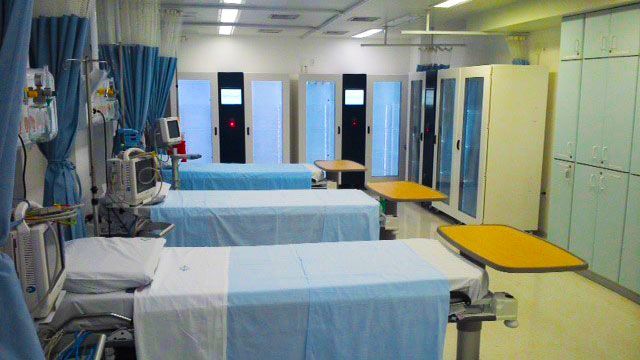
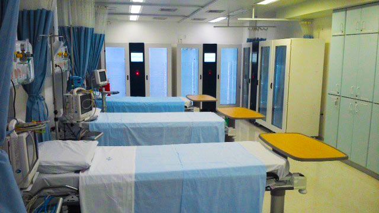

Basavanagudi,Bangalore
Diagnostic Center Hospital
Six decades ago a man with a mission to educate people first private Engineering College. The man was none other than the founding father of BMS educational institution Sri B.M Sreenivasaiah. His son, Mr. B.S Narayan, pursued his father’s dream to help the needy and laid the foundation stone for B.S Narayan memorial hospital in the year 1991. Before his efforts could gain momentum his soul left us with the responsibility to carry forward his legacy and give the best affordable medical facility. Our life trustee Mrs. Ragini Narayan, kindled by the benevolent and noble thoughts of her husband, has turned B.S Narayan Memorial Day Care center into a state of the art multidimensional hospital, where anyone can seek cure and are under the guidance of experienced doctors without worrying about the cost.
Address
Opp. BMS Engineering College, Bull Temple Road,
Bangalore – 560019, Karnataka
Phone: 91(80) 26613888/26613993
Mobile: +91 9900013234
Website: http://bmshospital.com/
Facilities Available
OPD Consultations
Emergency
Operation Theatre with fully Equipped Recovery Room
Trauma and Casualty
Inpatient Services
Radiology (Digital X-Ray, Ultrasound, Doppler)
2D Echo + Colour Doppler, TMT(Stress ECG)
Laboratory
Pulmonary Function Test
Physiotherapy ENT
Ambulance Services
Pharmacy
Contacts
Dr. Megha
BMS Campus Health Care Centre
BMS College of Engineering
Bull Temple Road,Bangalore-19
 
